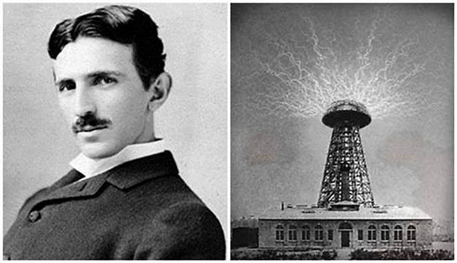
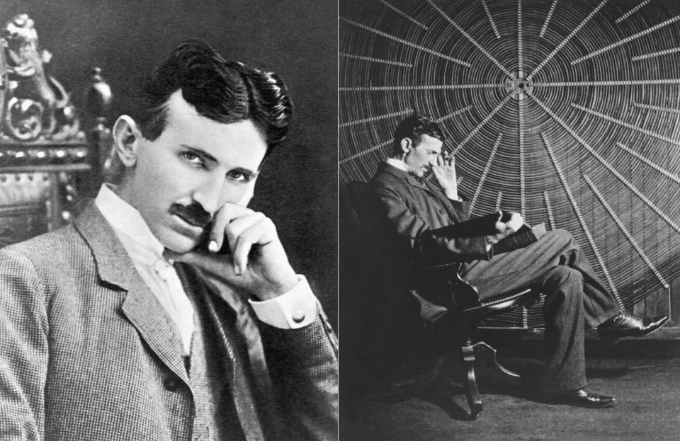

Ideas
Pensamiento o filosofía
 Nikola Tesla tenía una filosofía profundamente enfocada en la innovación, el progreso y el bienestar de la humanidad. Creía firmemente en el poder de la ciencia y la tecnología para transformar el mundo y mejorar la vida de las personas. Tesla sostenía que el conocimiento debía compartirse libremente y soñaba con un futuro donde la energía fuese gratuita y accesible para todos. Además, tenía una visión casi mística de la naturaleza, viendo al universo como un vasto sistema interconectado que podía entenderse a través de la lógica y la matemática. Para él, la curiosidad y la imaginación eran motores esenciales del desarrollo humano. Esta mezcla de idealismo y genialidad definió su forma de pensar y trabajar.
Logros
Contribuciones o Logros
Nikola Tesla realizó contribuciones extraordinarias que transformaron la tecnología y la ciencia. Entre sus logros más destacados están:
◉Desarrollo de la corriente alterna (AC): Promovió el uso de AC como un método eficiente para la transmisión de electricidad, revolucionando su distribución en todo el mundo.
◉Invención del motor de inducción: Este motor, basado en AC, es fundamental en la maquinaria moderna.
◉Creación de la bobina de Tesla: Una innovación clave para generar altas frecuencias, utilizada en radio, comunicaciones y tecnología inalámbrica.
◉Patentes en electricidad y mecánica: Registró más de 300 patentes que abarcan desde sistemas de generación de energía hasta dispositivos para comunicaciones.
◉Visión de la energía inalámbrica: Aunque no llegó a concretarse, fue un precursor en la idea de transmitir electricidad sin cables, un concepto que inspira tecnologías actuales.
Bienes Materiales
Mas...
 Nikola Tesla tuvo una vida marcada por la dedicación a la ciencia más que por la acumulación de bienes materiales. Al final de su vida, vivía en el Hotel New Yorker en Nueva York, donde falleció en 1943. Tras su muerte, el gobierno de los Estados Unidos confiscó sus pertenencias y documentos, muchos de los cuales contenían ideas y proyectos relacionados con sus investigaciones. Aunque no poseía grandes riquezas ni propiedades, su legado está en sus innovaciones y contribuciones al progreso tecnológico